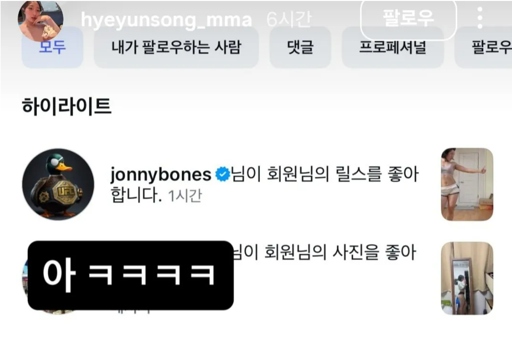

동일체급 경기 여자 승
참고로 저 여자분 우리 체육관에 일일체험 하러 온적 있는데 3개월 이하 남자 일반부는 다 닦는 실력임

존존스의 픽을 받은 최초의 한국여자..
<남자 참가자 후기> 펨코 펌
시합이 끝나고 영상이 풀리면 어느 정도 조리돌림(?) 당할 거라는 건 예상하고 있었습니다만
경기 설명이 따로 없어 몇몇 오해 하시는 분들이 있어 그 부분을 풀고 경기 전후 상황까지 설명드리면 재밌을 것 같아 후기 남겨봅니다.
일단 저는 36살이고 연극하는 사람입니다.
키 163cm, 몸무게 57kg입니다.
원래 굉장히 마른 체질이라 평생 53kg 정도로 살다가 나이 먹으면서 최근에 나잇살로 4kg 정도 증량된 케이스입니다.
애초에 피지컬 자체가 좋은 편이 아닙니다.
살면서 싸움 한 번 해본 적 없고, 남의 얼굴에 주먹 한 번 제대로 내질러본 적도 없습니다.
헬스나 다른 운동도 하지 않습니다. 가끔 공연할 때 무대 세트 나르는 것 정도를 제외하면 평소에 근육 쓸 일도 거의 없습니다.
그런데 인스타에서 '운동을 배운 여자 vs 마른 남자' 같은 콘셉트의 대결 참가자를 모집하더라고요.
평소에도 궁금했던 주제였고, 어릴 때부터 K-1, 프라이드, UFC 같은 격투기를 즐겨봐서
'내가 평생 언제 이런 링에 한번 올라가 보겠나.'
하는 순수한 호기심으로 지원했습니다.
처음에는 키 170cm 이상, 몸무게 60kg 정도에 운동을 1년 정도 하신 여성분과 붙는 것으로 알고 지원했습니다.
그런데 그분이 하차하셨고, 이후에는 그보다 훨씬 체격이 작은 인플루언서분이 상대가 됐습니다.
그런데 그분도 경기 당일 갈비뼈 부상으로 하차하면서 결국 약 4년 정도 운동하신 선수분과 붙게 됐습니다.
심지어 원래 입식으로 알고 있었던 룰도 MMA로 변경됐습니다.
솔직히 부담은 엄청났습니다.
그래도
'이런 경험이 또 어디 있겠냐. 한번 부딪혀보자.'
하고 승낙했습니다.
그리고 제가 지원서를 쓸 당시에는 평생 재오던 몸무게가 53kg 정도였기 때문에 체중을 53kg으로 적었습니다.
그런데 막상 계체를 해보니 57kg이 나오더라고요.
저도 당황했고 선수분도 제가 생각보다 체중이 나가서 동체급이 된 것에 조금 당황하셨습니다.
다만 애초에 경기 자체가 진지하게 승패를 겨루는 프로 시합이 아니라 이벤트 경기였습니다.
주최 측에서도 승패보다는 서로 다치지 않고 재미있는 모습을 보여줬으면 좋겠다고 했습니다.
저 역시 웃기다가 지려고 나갔고 공연을 준비 중인 배우라 부상은 절대 피해야 하는 상황이었습니다.
그래서 죽기 살기로 이기려고 하기보다는
'어차피 이벤트 경기니까 최대한 재미있게 해보자.'
라는 생각으로 링에 올라갔습니다.
저보다 앞 경기에서는 헬스를 하신 여성분과 어린 남성분이 경기했는데, 남성분이 정말 운동 신경이 거의 없는 분이셨습니다.
보면서
'나도 링 위에 올라가면 저렇게 아무것도 못 하는 거 아닌가?'
걱정이 되더군요.
그래도 상대 선수분이 경기 전에
"잘 받아줄 테니까 그냥 자신 있게 하세요."
라고 해주셔서 기합 한번 넣고 입장했습니다.
저는 배우니까 그냥 링을 무대라고 생각했습니다.
'나는 지금 격투기 선수다. 오늘 데뷔전이다.'
라고 혼자 설정 잡고 주최 측이 원하던 광대 모드에 몰입했습니다.
어디서 주워들은 건 있으니까 입장하면서 관객 호응도 하고, 가오도 잡고, 쇼맨십도 부리고요.
그리고 태어나서 처음으로 링 바닥을 밟아봤는데 생각보다 굉장히 말랑했습니다.
탄성이 있어서 넘어졌을 때 충격을 많이 흡수해주겠구나 싶었습니다.
경기가 시작되고 일단 본 건 있으니까 글러브 터치부터 했습니다.
그런데 시작하자마자 엄청 긴장됐습니다.
글러브를 끼고 사람한테 주먹을 내지르는 것도 처음이고, 링 위에서 스텝을 밟는 것도 처음이다 보니 뭘 어떻게 해야 할지 모르겠더군요.
그냥 허공에 잽이나 날리고 있었는데 선수분이 가볍게 로킥을 한번 차셨습니다.
그런데 이게 생각보다 되게 묵직하게 들어옵니다.
신가드라는 다리 보호대를 차고 있어서 그런지 무게감은 확실히 느껴지는데 막 아프지는 않았습니다.
그거 한 대 맞는 순간 이상하게 긴장이 확 풀렸습니다.
'아, 이런 느낌이구나.'
싶으면서 남자로서 스위치가 켜졌는지 본능적으로 전진했습니다.
당연히 배운 펀치가 아니니까 제가 붕붕 휘두르면 선수분은 가볍게 백스텝 밟으면서 다 피하시더군요.
초반에는 저도 하단을 몇 번 차봤는데 스스로 느끼기에도 너무 어색해서 그 뒤로는 거의 안 찼습니다.
다행히 얇은 글러브가 아닌 빵빵한 글러브라 맞아도 생각보다 아프진 않고 무게감만 전달 됐습니다.
문제는 맞는 순간 고개가 밀리고 글러브에 시야가 가려지니까 정신이 하나도 없습니다.
그래도
'생각보다 막 아픈 건 아니네.'
라는 걸 알고 나니까 그때부터 본격적으로 광대 모드가 발동했습니다.
거리재기 움직임 스탭 심리전 이런거 하나도 모르지만 그냥 뭐 있는 척 했습니다
사실 경기 전에 해보고 싶었던 게 엄청 많았습니다.
앞손으로 시야 가리고 때리기, 슈퍼맨 펀치, 백스핀, 다른 데 쳐다보다 갑자기 때리기, 뎀프시롤, 센도 스매시, 가젤 펀치, 울프팽, 아픈 척하다 때리기, 이마나리 롤 등등...
격투기 만화나 경기를 보면서
'링 한번 올라가면 저거 다 해봐야지.'
생각했던 게 많았는데 체력 문제로 절반도 못 해본 게 지금도 제일 아쉽습니다.
그리고 진짜 충격적이었던 게 체력입니다.
엄청 헥헥대고 힘들거라는건 예상헀지만
1라운드 부터 이미 몸에 부하가 오는 게 느껴졌습니다.
제가 쇼맨십한다고 방방 뛰어다니면서 체력 소모도 더 컸어서 그런지
폐, 심장, 다리, 팔 할 것 없이 온몸이 그냥 비명을 질렀습니다.
2라운드가 시작하자 선수분이 하단 태클을 하시더군요
사실 선수분이 레슬링 베이스라는 것도 알고 있었고, 상대 세컨에서도
"이제 주특기로 가보자."
라는 이야기가 들려서 태클이 올 거라는 것도 어느 정도 예상하고 있었습니다.
제 세컨분이 스프롤도 알려주셨습니다.
그런데 알고 있는 거랑 막는 건 전혀 다른 문제더군요.
태클 들어오는 높이가 제가 생각한 것보다 훨씬 낮고 속도도 빨랐습니다.
발 하나 잡히고 그대로 당겨지는데 뭘 해볼 새도 없이 바닥으로 끌려 내려갔습니다.
그리고 선수분이 위에서 너무 자연스럽게 몸을 이동하기 시작하는데
'아, ㅈ됐다.'
싶었습니다.
선수분 고개까지 빠지면 진짜 큰일 날 것 같아서 이를 악물고 선수분 목을 붙잡았습니다.
의도한 건 아니었는데 본능적으로 제 다리로 선수분 다리도 잠그게 되더군요.
어디서 본 건 또 있어서
'이 상태로 서로 움직임 없이 대치되면 심판이 스탠딩 시키지 않을까?'
싶어서 심판을 쳐다보며 죽어라 버텼습니다.
다행히 그때까지는 체력이 조금 남아 있어서 팔 힘으로 버틸 수 있었습니다.
결국 스탠딩 선언이 나왔고 다시 일어섰습니다.
그런데 일어나자마자 완전히 기진맥진했습니다.
숨은 미친 듯이 차고 다리는 후들거리고,
'이제 얼마 못 버티겠다.'
라는 직감이 왔습니다.
그래서 바로 맥스 할로웨이 빙의해서 가운데에서 발 붙이고 싸우자는 제스처 한번 해주고, 남은 체력 다 털어서 하고 싶었던 거라도 해보자는 생각으로 돌진했습니다.
앞손으로 시야 가리고 펀치까지 한번 해본 다음
'자, 이제 뭐 하지?'
생각하고 있는데 10초 남았다는 사인이 들렸습니다.
그러자마자 성공할 리 없다는 걸 알면서도 태클 한번 들어갔습니다.
어차피 바로 바닥으로 끌려갈 건 알고 있었지만 곧 종료벨이 울릴 테니까 그냥 한번 해보고 싶었습니다.
그렇게 2라운드가 끝났습니다.
문제는 그때 이미 서 있을 힘조차 거의 남아 있지 않았다는 겁니다.
솔직히 그 순간에는 그냥 기권하고 집에 가고 싶었습니다.
그런데 제가 경기 전에 혼자 생각해놓은 엔딩이 있었습니다.
마지막 라운드 종료 10초 전.
가운데에서 서로 발 붙이고 싸우자는 제스처를 하고 난타전.
그러다 카운터 한 방 맞고 마우스피스 뱉으면서 장렬하게 KO.
혼자 이런 영화 같은 엔딩을 생각해놨습니다.
그래서
'여기까지 왔는데 마지막까지 해보자.'
하고 기합 한번 넣고 3라운드에 나갔습니다.
그런데 몸이 말을 안 듣더군요.
팔이 안 올라갑니다.
다리가 안 움직입니다.
과호흡이 오니까 머리도 어지럽고, 이제는 뭘 하고 싶어도 그냥 서 있는 것밖에 할 수가 없었습니다.
제가 거의 움직이지 못하니까 선수분도 이제 경기를 마무리하려고 들어오셨습니다.
펀치가 날아오는 건 눈에 보이고 머리로는 인식이 됩니다.
그런데 몸이 움직이질 않으니까 그냥 맞게 됩니다.
그러다 연속으로 네 대 정도 맞았는데 그로기가 오거나 의식이 날아간 건 아니었습니다.
그런데 맞으면서 고개가 돌아가 상대가 시야에서 사라졌는데 계속 펀치가 들어오니까
'이건 위험하겠다.'
싶었습니다.
그래서 거리 벌리려고 처음으로 뒤로 도망갔습니다.
사람이 생명의 위협을 느끼니까 신기하게도 그 와중에 도망갈 힘은 나오더군요.
그러다 선수분이 다시 시야에 들어오니까 또 전진하고, 펀치 몇 번 휘두르고, 다시 서 있고...
사실상 몸은 이미 방전된 상태였습니다.
마지막에 하이킥이 한번 스치고 나서는
'아, 종료 10초 전까지도 못 버티겠다.'
싶었습니다.
그래서 차라리 마지막으로 남은 힘을 짜내서 붕붕 들어가다가 펀치 한 방 맞고 마우스피스 뱉으면서 쓰러지자고 생각했습니다.
그런데 제가 너무 맥없이 들어오니까 선수분이 때리지 않고 그냥 목을 잡아서 넘기시더군요.
넘어가면서 저도 모르게 혼잣말로
"어... 이러면 안 되는데."
라고 했습니다.
제가 생각했던 장렬한 KO 엔딩이 아니었거든요.
하지만 이미 그때는 더 버틸 의지가 남아 있지 않았습니다.
누운 이후에도 선수분은 제 팔 정도만 제압하고 강하게 기술을 걸거나 세게 파운딩을 치거나 압박하지 않았습니다.
결국 제가 심판님한테
"힘들어요."
라고 말했고 그대로 경기가 끝났습니다.
그래서 영상만 보시고 오해하지 않으셨으면 하는 부분이 있습니다.
이 경기는 애초에 승패를 진지하게 따지는 경기가 아니라 이벤트성 경기였고, 상대 선수분이 정말 많이 봐주셨습니다.
선수분의 주 분야가 레슬링과 그라운드인데 제가 걱정하는 걸 아시고 본인도 타격 위주로 상대해주시겠다고 하셨습니다.
제가 이것저것 이상한 거 해보는 것도 다 받아주셨고요.
3라운드 마지막에 경기를 마무리하려고 들어오셨을 때를 제외하면 펀치나 킥도 힘껏 친 적이 거의 없습니다.
저는 선수분께 정말 감사하게 생각하고 있습니다.
제 피지컬이 일반 남성을 대표하지 못하는건 압니다. 훨씬 왜소하죠
만약 173cm에 65kg 정도 되는 평균적인 체격의 남성이 상대였다면 당연히 저보다 힘도 세고 피지컬도 좋아서 선수분이 상대하기 더 까다로웠을 수도 있습니다.
그런데 직접 경험하고 나서 제가 가장 크게 느낀 건 단순한 체격보다도 '체력'과 '경험'의 차이였습니다.
아무리 신체조건이 좋고 힘이 센 사람도 체력이 빠지면 그 힘을 제대로 사용할 수가 없습니다.
특히 저처럼 평소 운동을 전혀 하지 않는 사람이면 아무리 체격이 좋아도 3라운드를 제대로 소화하기 쉽지 않을 거라고 생각합니다.
그리고 배우고 안 배우고 경험의 차이도 정말 컸습니다.
저는 머릿속에서
'잽 해야지, 피해야지, 태클 막아야지.'
라고 생각해야 움직이는데 선수분은 그런 게 아예 몸에 들어가 있었습니다.
항상 가드를 유지하고, 제가 들어가면 카운터를 준비하고, 상황에 맞춰 자연스럽게 움직였습니다.
하이킥이 빗나간 다음 바로 이어지는 백스핀이나 견제 잽 같은 동작도 그 자리에서 즉흥적으로 하는 게 아니라 수없이 연습해서 몸에 들어간 루틴이더군요.
특히 그라운드에서는 차이가 더 심했습니다.
저는 넘어지는 순간부터
'뭘 해야 하지?'
인데 선수분은 다음 동작, 그다음 동작이 자연스럽게 연결됐습니다.
그걸 보면서
'아, 이게 훈련의 차이구나.'
싶었습니다.
개인적으로는 정말 재미있는 경험이었습니다.
지금은 온몸 근육통으로 고생하고있지만
36살 먹고 운동 한번 제대로 해본 적 없는 제가 언제 MMA 링에 올라가서 선수랑 3라운드를 뛰어보겠습니까.
영상으로만 보던 공간에 직접 올라가서 글러브도 껴보고, 맞아도 보고, 태클도 당해보고, 그라운드도 경험해보고, 체력도 완전히 털려보고.
한 번쯤 해보고 싶었던 경험은 거의 다 해본 것 같습니다.
딱 하나 아쉬운 건 준비해간 기술을 다 못 써봤다는 겁니다.
다음에 또 기회가 온다면 체력 좀 키워서 이마나리 롤까지는 꼭 시도 해보겠습니다.
그리고 마지막으로 상대해주신 선수분께 다시 한번 감사드립니다.
정말 많이 까불었는데 제가 다치지 않도록 끝까지 배려하면서 경기해주셨고, 처음 링에 올라간 일반인에게 좋은 경험 만들어주셨습니다.
격투기에 조예가 깊고 운동 좀 하신 분들에겐 많이 하찮으시곘지만 영상은 그냥 재미로 봐주시고,
'운동과 거리가 먼 사람이 실제로 링에 올라가면 이런 느낌이구나.'
정도로 봐주시면 될 것 같습니다.
기회가 되신다면 직접 겪어 보셔도 정말 좋은 경험 되실 것 같습니다
긴글 읽어주셔서 감사합니다.
행복하세요
*머리는 작품 배역때문에 기르는 중입니다
시야 가려질꺼 알고 머리핀을 가져갔었는데 헤드기어 쓰고 한다 그래서 고정 안했다가
입장 바로 전에 안쓰기로 협의해서 고정을 못하고 들어갔습니다
저도 머리 거슬려 죽는줄 알았습니다
남자분도 성격 좋으신듯 역시 안배운 사람과 배운 사람은 체력에서 제일 차이가 많이남
송혜윤 선수 인스타 들어가면 좋은 구경할 수 있따 존존스가 따봉 누른 이유가 있음 ㅋㅋ